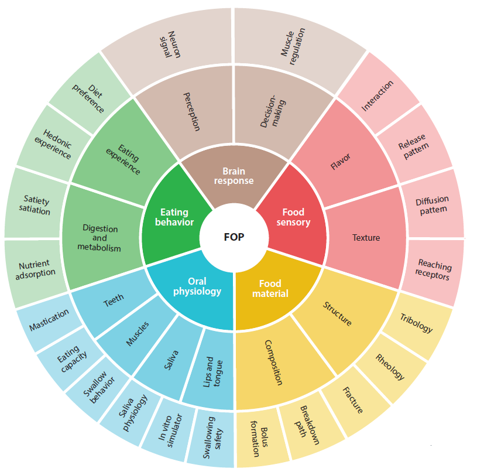

Food Oral Processing#
Food oral processing (FOP) is a rapidly emerging cross-disciplinary research area in food science that reveals the scientific insights into eating and sensory perception. This chapter provides an overview of FOP fundamentals, covering the physics, physiology, and psychology of how humans interact with food during consumption.
Introduction to Food Oral Processing#
Food oral processing encompasses the complete journey of food from the moment it enters the mouth until swallowing. The field integrates principles from food physics, material science, oral physiology, sensory psychology, and neurology to understand how humans perceive and experience food texture, flavor, and mouthfeel.
The FOP Framework#
The oral cavity serves as a sophisticated processing environment where multiple phenomena occur simultaneously:
Food destruction and reconstruction — bolus formation through mastication
Oral lubrication — interaction between food, saliva, and oral surfaces
Food–saliva interactions — enzymatic and physical modifications
Flavor compound release — aroma and taste diffusion
Sensory perception — tactile, gustatory, and olfactory stimulation
Motor coordination — tongue, teeth, and muscle function

Fig. 3 The Food Oral Processing framework illustrating the interplay between food physics, oral physiology, and sensory perception during eating.#
Key Principles#
Several fundamental principles underpin FOP research:
Dynamic sensory perception — Eating experience combines all perceivable sensory attributes (texture, aroma, taste) that are intercorrelated and exhibit dynamic changes closely influenced by oral breakdown of food structure.
Rheology–tribology transition — The changing of dominating physical principles during oral processing reflects texture perception mechanisms, particularly mouthfeel sensations.
Saliva as an active ingredient — Perception comes not from the stimuli of food alone, but from the stimuli of the bolus (food + saliva mixture), which differs completely from the ingested food.
Material vs. sensory properties — Instruments measure material properties, not sensory properties. These are fundamentally different in nature.
Bolus rheology controls swallowing — Good flowability and appropriate cohesiveness are critical for triggering safe swallowing.
Texture Perception#
Food texture is a sensory reflection of the structural, mechanical, and surface properties of food. However, texture perception depends on two main factors: food properties and individual oral physiology.
Cross-Disciplinary Interplay#
Texture perception emerges from the interplay between:
Food Physics:
Fracture mechanics
Rheological properties
Tribological behavior
Oral Physiology:
Mastication patterns
Structural destruction
Saliva interactions
Texture Attributes#
Common texture descriptors include:
Category |
Attributes |
|---|---|
Mechanical |
Hardness, firmness, crispness, crunchiness |
Adhesive |
Cohesiveness, adhesiveness, stickiness |
Surface |
Smoothness, grittiness, slipperiness |
Complex |
Creaminess, mouthcoating |
Mastication and Chewing Behavior#
Mastication reduces food to smaller particle sizes while mixing with saliva. The process is controlled by:
Selection function — probability of a particle being selected for size reduction
Breakage function — extent of size reduction after one chewing cycle
Key parameters for characterizing chewing behavior:
Chewing efficiency
Chewing capability
Chewing performance
Number of chewing cycles before swallowing
Fracture and Rheology#
The physical basis of chewing involves deformation and flow of food material:
Solid foods: Fracture mechanism determines sensations of hardness, crispness, crunchiness
Soft-solid foods (gels): Deformation and breaking determine sensations of firmness, cohesiveness, stickiness
Fluid foods: Flow behavior under shear determines viscosity perception
Oral Tribology#
Oral tribology concerns friction and lubrication inside the oral cavity between surfaces of food, tongue, teeth, and hard palate. Unlike rheology (bulk properties), tribology concerns system properties with two interacting surfaces in relative motion.
Thin-film related texture attributes:
Creaminess
Smoothness
Slipperiness
Greasiness
Astringency
The friction coefficient correlates strongly with perceived slipperiness, where lower friction corresponds to higher slipperiness ratings.
Flavor Perception#
Flavor combines sensory attributes from taste and aroma compounds perceived by specific receptors. The sensation is chemistry-dominant and highly dynamic.
Aroma Release and Perception#
Aroma perception occurs through two pathways:
Ortho-nasal olfaction — via the nose during sniffing
Retro-nasal olfaction — via the mouth during food consumption
Factors affecting aroma release:
Chemical properties of aroma compounds
Physicochemical properties of food matrix
Food fragmentation during mastication
Saliva flow rate and composition
Oral volume and tongue pressure
Gustatory Perception#
Five basic tastes are recognized: sweet, salty, sour, bitter, and umami.
Key concept: Saliva serves as a taste reference baseline. Tastants in normal saliva constantly stimulate receptors, perceived as tasteless due to self-adaptation. Taste perception occurs only when tastant concentrations differ from this baseline.
Taste Enhancement Strategies#
Structure manipulation can enhance taste perception:
Larger surface area during oral breakdown increases available tastants
Inhomogeneous spatial distribution creates pulsed delivery
Complex coacervates can achieve ~30% salt reduction without impacting perception
Bolus Swallowing#
Swallowing transfers the food bolus from oral cavity to stomach through coordinated muscle operation.
Swallowing Phases#
Oral phase — food mastication and mixing with saliva to form appropriate bolus
Oropharyngeal phase — bolus transport to pharynx by tongue pressure
Esophageal phase — bolus squeezed into esophagus by oropharyngeal pressure
Bolus Formation Model#
The breakdown path model describes eating and bolus formation using:
Structure parameter — dimensionless particle area (particle area / initial food area)
Lubrication parameter — friction coefficient representing lubrication status
Food becomes swallowable when it reaches:
Appropriate particle size
Good lubrication status
Suitable cohesiveness
Swallowing Safety#
Safe swallowing requires proper bolus properties:
Shear viscosity — controls flow behavior
Extensional viscosity — maintains bolus cohesiveness during pharyngeal transit
Cohesiveness — prevents fracturing and splashing
The International Dysphagia Diet Standardisation Initiative (IDDSI) provides texture grading standards for dysphagia management.
Eating Behavior#
Eating behavior research reveals consumer attitudes toward food consumption and health impacts. The way food is eaten affects consumption amount and satisfaction.
Oral Processing Parameters#
Key behavioral parameters:
Bite size
Chews per bite
Eating rate
Oral residence time
Satiation and Satiety#
Satiation — process resulting in meal termination, modified by cognitive and sensory processes during oral processing
Satiety — suppression of hunger between meals, consequence of post-ingestive and post-absorptive processes
Longer orosensory exposure (OSE) generally induces:
Earlier satiation
Enhanced subsequent satiety
Lower ad libitum food intake
Food Design Implications#
Texture modifications affecting eating behavior:
Harder foods → longer OSE → potential increased satiety
Higher viscosity → smaller bite size → lower intake
Increased textural complexity → slower eating rate
The FOP Wheel#
The FOP research landscape spans multiple interconnected domains:
Core Areas:
Food material properties
Oral physiology
Food sensory perception
Eating behavior
Brain responses
Disciplinary Approaches:
Rheology and tribology
Fracture mechanics
Bolus formation models
Swallowing safety assessment
Satiety/satiation measurement
Future Directions#
Research Priorities#
Saliva research — physics, physiology, and manipulation of food–saliva interactions; individual and ethnic variation in saliva composition
Oral thin film — functional properties affected by composition, fluid dynamics, mechanical strength, and permeability
Oral physiology — functions of tongue, saliva, oral/orofacial muscles, and sensory receptors
Oral physics — structural changes at multiple length scales; food–saliva interface phenomena; mass transfer at particle and molecule levels
Technical Challenges#
Ethical restrictions on in vivo studies
Limited techniques for oral access (noninvasive or invasive)
Need for in vitro setups mimicking oral conditions
Development of noninvasive oral access technologies
Summary#
Food oral processing provides a comprehensive framework for understanding eating and sensory perception by integrating:
Food physics with oral physiology
Instrumental measurements with sensory perception
Material properties with human experience
The field offers new approaches to food design, particularly for:
Texture optimization
Flavor enhancement with reduced sugar/salt
Foods for special populations (elderly, dysphagia patients)
Health-oriented products balancing pleasure and nutrition
References#
Chen, J. (2009). Food oral processing—A review. Food Hydrocolloids, 23(1), 1–25.
Chen, J., & Stokes, J.R. (2012). Rheology and tribology: Two distinctive regimes of food texture sensation. Trends in Food Science & Technology, 25(1)